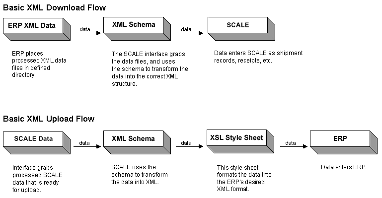

XML Interface Mode Overview
What is the XML Interface Mode?
An XML interface involves the system retrieving your ERP's XML-formatted
data files. These XML files are placed in a specified directory, with
a file extension that the system can recognize. When the interface process
is started, the system parses the data (based on an XML style sheet),
and places it in a SCALE database table.
Using this method to upload, when the interface is started, SCALE parses
the data into the XML format, and places it into an XML file (with a user-defined
file extension) in a directory on your server. This eligible data has
reached a minimum user-defined status, such as "load confirmed"
for shipments or "closed" for receipt containers. The ERP then
will retrieve this XML file, parse the data, and insert it into its own
database.
What is the Basic Functional Flow of the XML
Interface Process?

When are XML Interfaces Commonly Used?
You would typically use the XML mode if
your ERP generates XML-formatted data. This method is appealing if you
do not have the business need to communicate directly to the system's
database tables.
What Actions Can an XML Interface Perform?
SCALE XML interface mode supports four data actions (for uploads and downloads):
- New Action:
This action allows you to introduce new records to the system (downloads),
or provide data to the ERP (uploads). Generally, this is the action you
would perform using the interface.
In XML mode, suppose your ERP generates a file filled with XML data,
which is ready to be imported into the system. When the interface is started,
these "new" files are processed by the system and interfaced
into the SCALE database. This data then can be processed by the user.
- Change Action:
This action allows you to update records that were interfaced to the system
from the ERP. Generally, records can be changed until they reach a certain
processing point in the system. As a rule, change verification of interfaced
records follows the same standards as the change action within the system.
For example, you cannot change the carrier on a shipment once it's been
ship confirmed; therefore, you cannot change the carrier on a ship-confirmed
shipment via the interface. To determine when a change action is prohibited,
please review the help and check your own processing rules for the functional
area in question. Change actions can be used for downloads only.
In XML mode, suppose your ERP generates an XML file filled with data
meant to update records that already exist in the system. When the interface
is started, these "change" files are processed by the system,
the XML data is translated, and then interfaced into the SCALE database.
These changes to data records, then, are merged into the SCALE database
(which houses the existing records).
- Delete Action:
This action allows you to remove records from the system that were interfaced
from the ERP. Like the Change action, you can delete a record until it
reaches a certain processing point in the system. The information provided
for the Change action above also applies for the Delete action. Delete
actions can be used for downloads only.
In XML mode, suppose your ERP generates an XML file with data identifying
already-existing records that need to be deleted from the SCALE database.
When the interface is started, these "delete" files are processed
by the system and interfaced into the SCALE database. The system will interface
the file in, and delete the appropriate data. For example, suppose there
is an order that was cancelled, the ERP would then send down an XML file
identifying this order. The system would then interface this file in,
translate the data, and make the appropriate deletion from the database.
- Save Action:
This action allows you to update a current record (that the system sees
is a duplicate), rather than create a second record with the updated information.
If no matching record is found, the system will insert a new record. This
is helpful if your ERP system generates data that does not indicate that
it is new data or changed data. Save actions can be used for downloads
and uploads.
In XML mode, suppose your ERP generates an XML file with data identifying
either new or already-existing records that need to be added/changed from
the SCALE database. When the interface is started, these "save"
files are processed by the system and interfaced into the SCALE database,
depending on the status of the data in the system. If the data already
exists, the system will handle this data record as a Change action. If
the data does not exist, the system will handle this as a New action
What are the Basic Steps to Implement / Use an
XML Interface?
The following configurations need to be addressed to process data via
an XML interface:
- First, you need to create an interface
process record, which determines how data will be downloaded/uploaded
between the system and the ERP. Each functional area has its own process
settings for the interface. For example, in the Receiving process record,
there is a separate detail record for each interface process you want
to use (such as "receiving delimited upload," "receiving
XML download," etc).
- Next, you will need to address the various interface system values. These values
mostly involve technical decisions that you have to address in order for
the system to run your interface properly, such as in what status you
want data to be eligible for uploading, or directories you want delimited
files to be downloaded from.
- Finally, you will need to decide if you want to
run your interface manually,
or have the system kick it off automatically
during scheduled time(s) of the day. If you decide to run it automatically,
you need to define a job record in the Scheduled Job Window.
What Does a Typical XML File Look Like?
To see examples of an XML file that is specially-formatted to interface
data into the system, see XML Interface Tutorials
and Schemas. When generating your XML files, make certain that they meet all the guidelines for correctly-formatted XML files. These can be found in XML tutorial books or on the Internet.
Where Should XML Files Be Placed in Order for
the System to Process Them?
You can define the directory where the system will place XML files to
upload to the ERP, or already downloaded files that the ERP sent to SCALE.
You can define these directories (the Interface Download Input Directory
for downloads and the Interface Upload Input Directory for uploads) on
the Interface System Values Window.
How Does the System Know Which Files to Download
to SCALE?
The system will attempt to process any files that have the appropriate
file extension. You can configure this extension on the Interface Process
Window, specifically the process detail record's File Extension Field.
For example, suppose you enter the file extension "shxml" for
the XML order download process detail record. When the download interface
process runs, the system will look in the specified directory for all
files that have an "shxml" extension. Note that it does not
matter what the file is actually named, as long as the matching extension
exists.
How Does the System Know Which Data to Upload
to the ERP?
The system will attempt to process data that has attained a minimum
status, which is defined on the Interface System Values Window. For example,
you can configure shipment data to be "eligible" for uploads
at such statuses as "load confirmed" or "ship confirmed."
When the upload interface process runs, the system will place a file in
the specified directory with this data in an XML format.
Where are XML Files Placed After Processing?
If you select the Save Processed Data
Checkbox on the interface process detail, the system will save
each "used" XML file in the interface's Output directory, appending it with a user-configurable
extension. If you do not select this setting, the system will delete "used"
XML files. Note, however, if a data validation error occurs with the interface, the system will place the original data file (with its original file extension) into a user-defined subfolder in the Output directory. You can indicate this directory in the Interface System Values Window.
Where does data go when downloaded into SCALE?
The answer for this depends on what type of data you are interfacing
into the system. For example, you could have downloaded orders to go into
the pool (in the Planned Shipment Insight screen), or as an "unassigned shipment"
(in the Shipment Insight). These statuses can be configured in the Interface
System Values Window.
What Happens if There is a Problem?
If there is a problem with the interface, an error file is created. The error file can be corrected and the information downloaded again. The original interface download file will be considerably larger than the error file. If there is an error, the system extracts all extraneous information from the error file generation. The only information that will be included is the shipment, shipment line, and container. Thus, some information from the original file is stripped out during the error creation process.